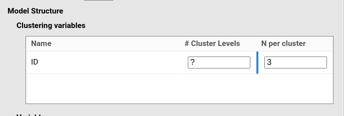
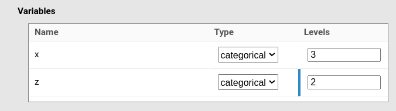
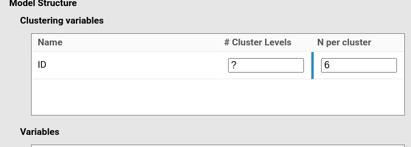
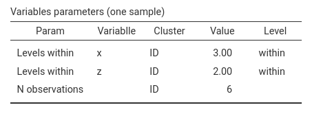
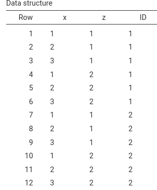
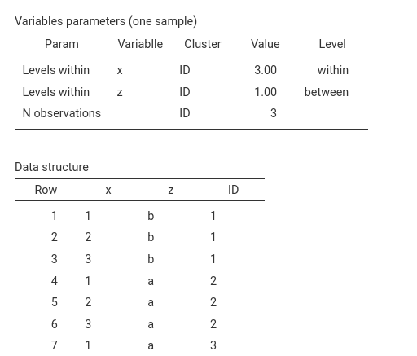
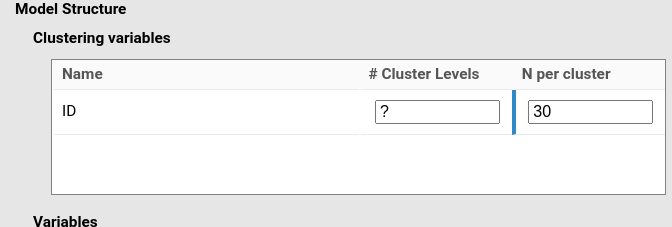
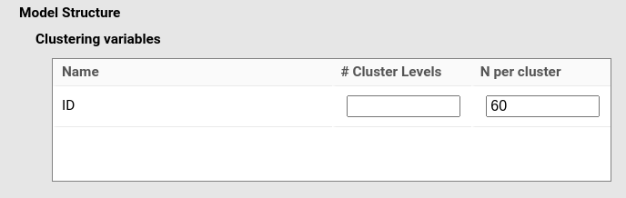

Mixed models: Building factorial designs
keywords power analysis, mixed models, factorial designs, repeated measures, multi-trial
0.8.4
Here we show how to build mixed models for some common experimental
designs.
We focus on how to define clusters and variables, and on how these
definitions translate into the data structure used for power analysis.
We do not discuss fixed or random effects specification
here; for that, see Mixed models: model
syntax.
One-way ANOVA design
Although technically a misnomer, the meaning of a one-way ANOVA
design is usually clear: one dependent variable and one independent
factor.
To make such a design relevant for mixed models, we consider the
repeated-measures case.
Assume that our repeated-measures factor has three levels.
| A | B | C | |
|---|---|---|---|
| Participant 1 | 1 obs | 1 obs | 1 obs |
| Participant 2 | 1 obs | 1 obs | 1 obs |
| … | … | … | … |
In each condition, each participant provides one observation, so each
participant contributes three observations in total.
From a mixed-model perspective, participants define the cluster variable
(ID). Each cluster level has three observations, therefore
N per cluster is equal to 3.
In PAMLj, we proceed as follows.
First, define the model:

Then define the variable x as a categorical variable
with three levels:

Because each participant (cluster) has three observations, N per cluster should be set to 3:

To verify that the data used by the module for power estimation have
the intended structure, we can inspect the table Variables
parameters (one sample).
This table is produced from a generated sample that follows the
specified design.

We can see that the variable x has three levels
within each cluster (ID). The cluster variable
itself has three observations per level.
Although this information may seem redundant in this simple design, in
more complex settings the number of observations per cluster does not
always coincide with the input N per cluster. Here,
everything is as expected.
Factorial RM-ANOVA designs
Assume now a study with two factors, x and
z, with three and two levels respectively.
Each participant is measured in every combination of the 3
(x) × 2 (z) design, for a total of six
measurements per participant.
We therefore specify a different model:

with two categorical variables:

Because this is a 3 × 2 repeated-measures design, we need six observations per participant:

The resulting data structure matches the intended design:

We can also inspect the Data Structure table, which lists
the first rows of a generated dataset.
As expected, the first participant (ID) shows all
combinations of the two factors.

Factorial between/within ANOVA designs
Now consider the same factorial design, but assume that one factor
(say z) is between participants.
To indicate that a variable varies between clusters (i.e.,
across participants but not within participants), we use the syntax
keyword bet: var|cluster (see
Mixed models: model syntax).
We specify this directly in the syntax field:

If z is between participants, the number of observations
within each participant is now three (one for each level of
x).
Accordingly, we set this value in Clustering
Variables:

The resulting data structure is again correct:

Notice the row Levels within for variable
z.
Because z is a between-cluster variable, each cluster
belongs to only one level of z. For this reason, the table
reports Value = 1, and the column Level correctly
shows between.
Factorial between ANOVA designs
Although less common in mixed models, a fully between-participants
factorial design is also possible.
This may occur as part of a larger design, or in studies where
clustering is still required for other reasons.
To specify a fully between-participants design, we simply declare all factors as between:

However, when the analysis goal is to determine the Number of
cluster levels (i.e., the number of participants), the module may
initially fail.
The reason is that the algorithm searching for the required number of
clusters starts from \(K = 2\). With
more than two cells, this may be insufficient to build the design.
The solution is to manually set # Cluster Levels to a
value larger than the number of design cells.
In this context, # Cluster Levels defines the starting
point of the search algorithm. Setting it to a feasible value allows the
procedure to work correctly.
In our example, we have a 3 × 2 design (6 cells).
To have at least four participants per cell, we need a minimum of 24
participants (6 × 4).
A more reasonable choice would be 35 participants (6 × 5).
Multi-trial one-way ANOVA design
Finally, consider again the one-way repeated-measures ANOVA design,
but assume that each condition contains multiple trials.
Suppose that, in each condition, each participant is measured 10 times.
Each participant then provides 30 observations in total.
In general, if \(T\) trials are repeated within each of \(C\) conditions, the number of observations per participant is
\[ N_c = T \cdot C \]
| A | B | C | |
|---|---|---|---|
| Participant 1 | 10 obs | 10 obs | 10 obs |
| Participant 2 | 10 obs | 10 obs | 10 obs |
| … | … | … | … |
Accordingly, we only need to change N per cluster and
set it to 30:

The generated data have exactly the intended structure:

The same logic applies to factorial designs.
Whatever the design, if each repeated-measures cell contains \(T\) trials, we simply set
N per cluster to \(T \cdot
C\), where \(C\) is the number
of within-participant cells.
For example, in a 3 × 2 design with 10 trials per cell, each participant contributes 60 observations:


Additional material
Details
Some more information about the module specs can be found here
Examples
Some worked out practical examples can be found here
Comments?
Got comments, issues or spotted a bug? Please open an issue on PAMLj at github or send me an email